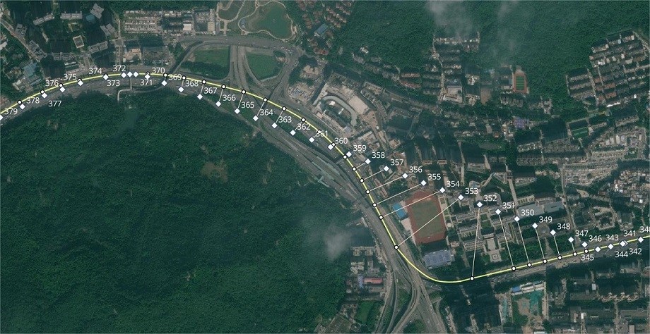
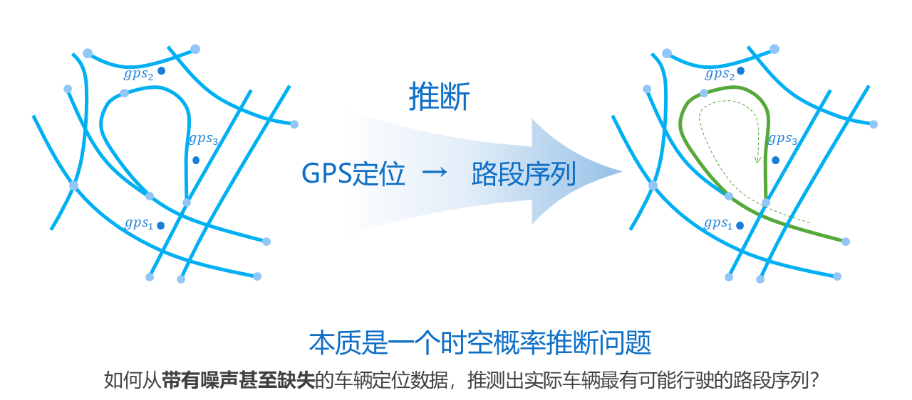

💡简介
1. 关于gotrackit
本地图匹配包基于隐马尔可夫模型(HMM)实现了连续GPS点位的概率建模，利用这个包可以轻松对GPS数据进行地图匹配，本开源包的特点如下:
- 数据无忧😻
提供路网生产模块(只需提供一个key即可获取路网)以及大量路网处理优化工具，您不需要准备任何路网和GPS数据即可玩转地图匹配； 提供GPS样例数据生产模块，解决没有GPS数据的难题； 提供GPS数据清洗接口，包括行程切分、滑动窗口降噪、数据降频、停留点识别、点位增密。
- 文档齐全☑️
中文文档，有详细的操作指引； 算法原理讲解部分不涉及复杂的公式推导，使用动画形式剖析算法原理,简洁明了。
- 匹配算法优化🚀
支持基于路径预存储的FastMapMatching、支持多核并行匹配、支持网格参数搜索； 对基于HMM匹配的初步路径进行了优化，对于不连通的位置会自动搜路补全，对于实际路网不连通的位置会输出警告信息，方便用户回溯问题。
- 匹配结果支持动画可视化🌈
匹配结果提供三种输出形式：GPS点匹配结果表(csv)、匹配结果矢量化图层、矢量图层匹配动画(HTML文件)，HTML动画方便用户直观地感受匹配结果，同时可以提高问题排查的效率。



交流群
2. 地图匹配问题
地图匹配问题指的是：如何从连续的车辆GPS定位信息推测出车辆实际行驶的路段,将GPS定位数据规范化表示为路段时空序列.
车辆产生的GPS数据会有定位误差，往往会和真实位置有较大的出入，在路网密度较大的时候，最近邻匹配效果会很差，而且最近邻匹配算法极其不稳定，没有充分挖掘GPS点之间的联通性。

为了准确获取车辆的实际路段轨迹，我们的匹配算法不能仅仅考虑单点信息，而是要纵观全局，单点的误差不可避免，长期连续的观测所获取的信息可以将这些误差充分平滑，因此基于连续状态的概率图建模是我们的技术路线。
3. 相关视频教程
《Hidden Markov map matching through noise and sparseness》,Paul Newson & John Krumm